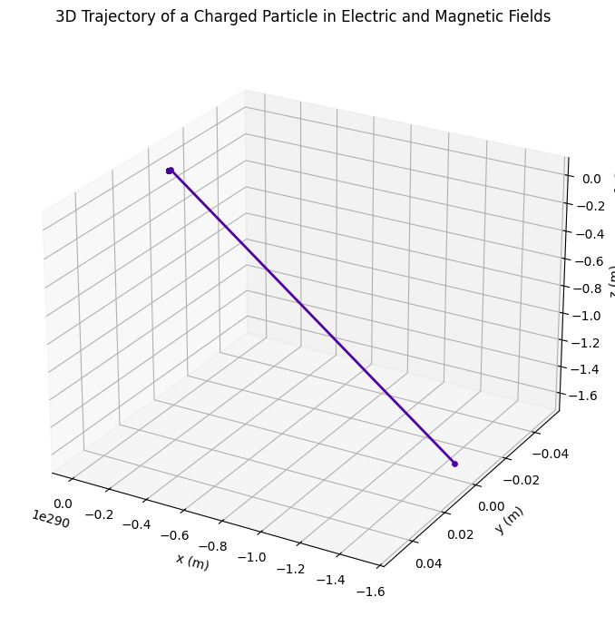

Problem 1
⚡ Electromagnetism: Lorentz Force Simulation
🧭 1. Explore Applications of the Lorentz Force
The Lorentz Force governs the motion of charged particles in electromagnetic fields and is given by:
\[\mathbf{F} = q\mathbf{E} + q\mathbf{v} \times \mathbf{B}\]
Where:
- \(\mathbf{F}\): Force on the particle (N)
- \(q\): Charge of the particle (C)
- \(\mathbf{E}\): Electric field vector (V/m)
- \(\mathbf{v}\): Velocity of the particle (m/s)
- \(\mathbf{B}\): Magnetic field vector (T)
🔬 Real-World Systems Where Lorentz Force is Crucial
- Particle Accelerators (e.g., cyclotrons, synchrotrons)
- Mass Spectrometers (for charge-to-mass ratio analysis)
- Plasma Confinement (in fusion devices like Tokamaks)
- Cathode Ray Tubes (e.g., in old TV displays)
- Cosmic Ray Deflection (motion of particles in Earth's magnetic field)
🎯 Roles of Electric and Magnetic Fields
- Electric Field (\(\mathbf{E}\)):
- Exerts a force in the direction of the field.
-
Accelerates particles linearly.
-
Magnetic Field (\(\mathbf{B}\)):
- Exerts a force perpendicular to both \(\mathbf{v}\) and \(\mathbf{B}\).
- Does no work on the particle (changes direction, not speed).
- Causes circular or helical motion.
🧪 2. Simulating Particle Motion Under Lorentz Force
We solve Newton's second law using:
\[m\frac{d\mathbf{v}}{dt} = q(\mathbf{E} + \mathbf{v} \times \mathbf{B})\]
Numerical integration is used to compute the particle’s trajectory over time.
🔄 Motion Types Observed
- Circular Motion: If \(\mathbf{v} \perp \mathbf{B}\), and \(\mathbf{E} = 0\).
- Helical Motion: If \(\mathbf{v}\) has a component along \(\mathbf{B}\).
- Drift Motion: When both \(\mathbf{E}\) and \(\mathbf{B}\) are present and crossed, the particle drifts with:
\[\mathbf{v}_{\text{drift}} = \frac{\mathbf{E} \times \mathbf{B}}{B^2}\]
📊 3D Trajectory Visualization

import numpy as np
import matplotlib.pyplot as plt
from mpl_toolkits.mplot3d import Axes3D
# Physical constants
q = 1.6e-19 # charge (Coulombs)
m = 9.11e-31 # mass (kg) - electron mass
# Fields
E = np.array([0, 0, 1e5]) # electric field (V/m) along z
B = np.array([0, 1, 0]) # magnetic field (T) along y
# Initial conditions
r0 = np.array([0, 0, 0]) # initial position (m)
v0 = np.array([1e5, 0, 0]) # initial velocity (m/s)
# Time parameters
dt = 1e-9
N = 1000
t = np.linspace(0, N*dt, N)
# Arrays to store position and velocity
r = np.zeros((N, 3))
v = np.zeros((N, 3))
r[0] = r0
v[0] = v0
# Lorentz force update loop
for i in range(N - 1):
F = q * (E + np.cross(v[i], B))
a = F / m
v[i + 1] = v[i] + a * dt
r[i + 1] = r[i] + v[i + 1] * dt
# Plotting with color gradient and visible dots
fig = plt.figure(figsize=(10, 7))
ax = fig.add_subplot(111, projection='3d')
# Color gradient along trajectory
colors = plt.cm.plasma(np.linspace(0, 1, N))
# Plot each segment with corresponding color and dot
for i in range(N - 1):
ax.plot(r[i:i+2, 0], r[i:i+2, 1], r[i:i+2, 2], color=colors[i], lw=2)
ax.scatter(r[i, 0], r[i, 1], r[i, 2], color=colors[i], s=15)
# Label axes and title
ax.set_xlabel('x (m)')
ax.set_ylabel('y (m)')
ax.set_zlabel('z (m)')
ax.set_title('3D Trajectory of a Charged Particle in Electric and Magnetic Fields')
# Set grid and view angle for better 3D perception
ax.grid(True)
ax.view_init(elev=25, azim=120)
plt.tight_layout()
plt.show()